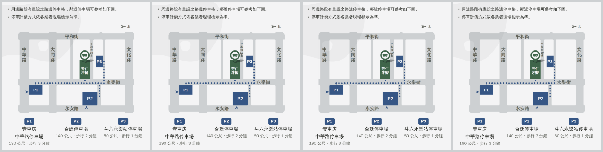
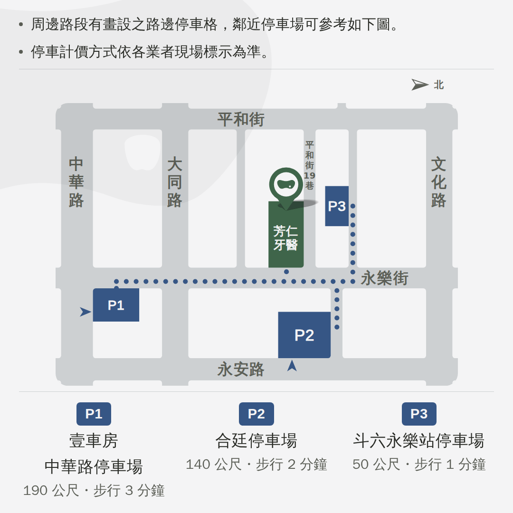
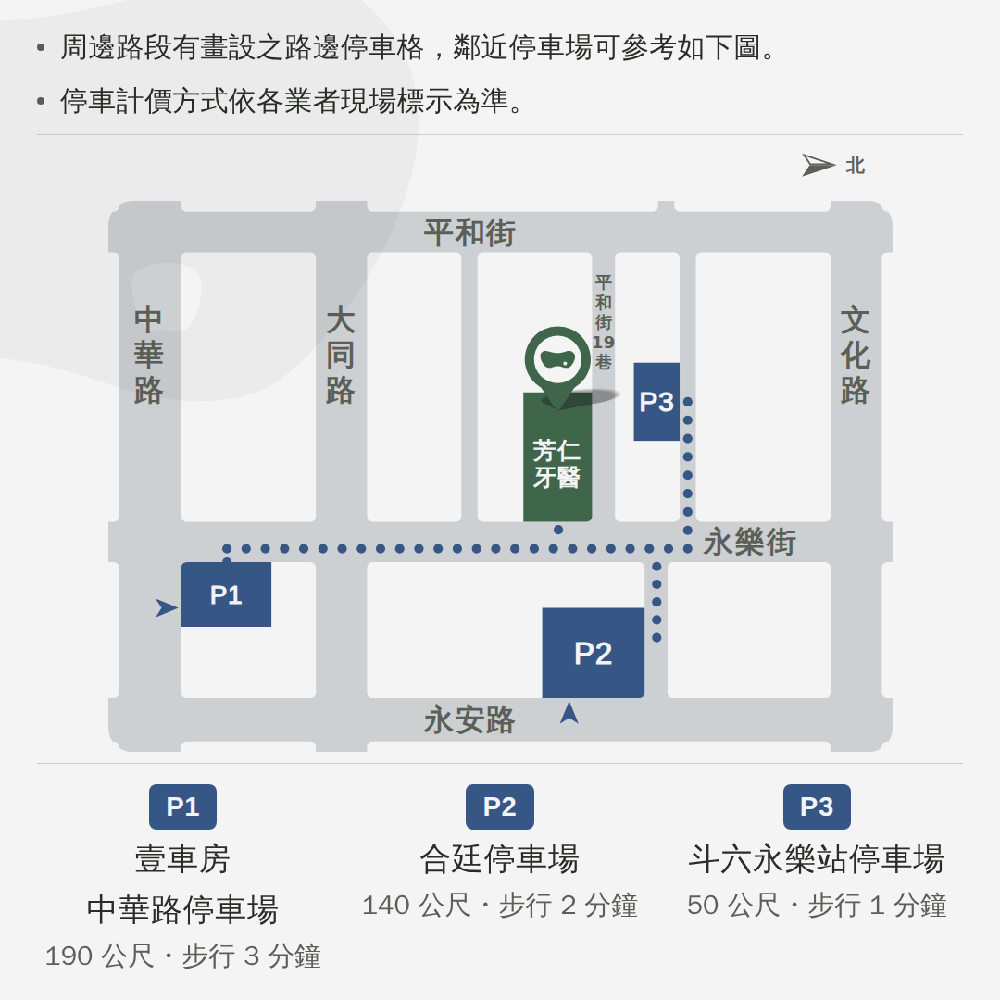
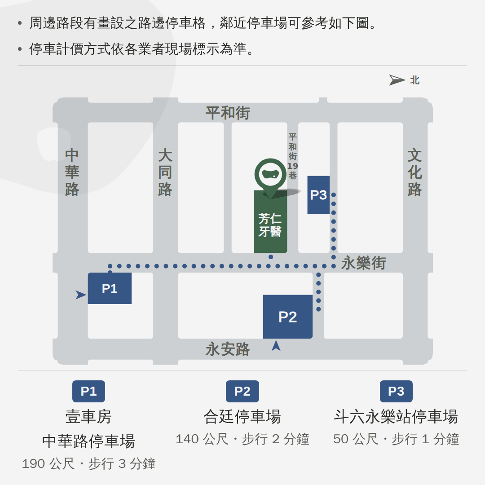

LINE 商家貼文・位置與周邊停車 2026-09-08 定案 door-c
主頁「最新貼文」那三格的小格左。
地圖、提醒、三張停車場卡全部是門口那張 A4 告示本人——產生器把
drafts/door-notice/ 跑起來，再把它的東西讀進 1080 的方畫布，
旋轉、街名重排、路線圓點、指北針一個字都沒有重做。
你挑定的：不放 QR・拿掉「紅線」「開單」那兩句・
下排字 ×1.30 折行・指北針 Ⓝ3・留白 Ⓜ3・
浮水印 4%・站上頁首那顆・壓左上・不加標題——全部寫回預設值了。
⚠ 只剩一件要挑：浮水印再往左多少（最後一節）。
⚠ 檔名還是流水號（door-…）——挑完就改成
fangren-map-1080.png。
⭐ 定案door-c浮水印再往左 440px（比你挑的 Ⓧ4 再左一格）

兩句一走、三顆碼一走，那些高度全部給了地圖：
460 → 848px，左右已經頂到版面的內距（各 40px）。
⚠ 指北針收到最小那一格之後，那張圖又瘦了一點（長寬比 1.283 → 1.292），
所以同樣的高度放得下更寬的圖：840 → 848px。
⚠ 綠塊裡是「芳仁牙醫」不是門口那張的「現在位置」——
看貼文的人不在那裡，那四個字會被讀成「你現在的位置」。
下排 名 34 → 小格 12.9px 距 29 → 11.0px（兩行第一次都過 10px）
提醒 30 → 小格 11.4px 地圖上的街名 32 → 12.2px
指北針 整組高 68.4 → 小格 26.0px 「北」19.7 → 7.5px
⚠ 「北」在 10px 以下是刻意的：那個字不必讀、形狀認得出來就好 （旁邊還有箭頭）。那條 10px 的線是給要讀完的字的，不是給記號的。
浮水印 畫出來 952×469・墨 4.0% 壓在它上面：墨字 11.95／柔墨 5.68（門檻 4.5）
在主頁上長怎樣大格＝看診時間（已定稿）／小格左＝這一張

⚠⚠ 這一張不能放大格：大格只看得到中間 537 列，
這一張的內容佔 27~1053——上下都會被切掉。
⚠ 小格右那一格還沒做（主題與科別七科）。
⚠⚠ 在小格的實際大小（410px）這一排才是判準

上面每一個數字都是量這個尺寸得來的。 這是真的 410px，不是縮圖——手機上看到多大，主頁上就多大。
⚠ 浮水印再往左多少要挑你說「可以比 Ⓧ4 再左一點」——整把尺往左移了一格
| 切掉 | 看得到 | 小格上 | |
|---|---|---|---|
| Ⓧ1 你上一輪挑的 | 380px | 572px | 217px |
| Ⓧ2 現在這樣（建議） | 440px | 512px | 194px |
| Ⓧ3 | 500px | 452px | 172px |
| Ⓧ4 這把尺的盡頭 | 560px | 392px | 149px |
那一顆畫出來 952×469（＝站上頁首那條標誌，按墨的面積和門診表那顆等重）。
「切掉」是它左邊被推出畫布的量，垂直一個字都沒動。
⚠ 這是一把有盡頭的尺：再往左就只剩右邊那一小塊，
形狀認不出來、浮水印就變成一團灰。

四格在小格上並排（左到右 ＝ Ⓧ1／Ⓧ2／Ⓧ3／Ⓧ4）。 ⚠ 這一張是縮小過的，要看實際大小請比對上面那張 410px 的。

Ⓧ1 380px——你上一輪挑的那一格。
Ⓧ2 440px（現在的預設）——比 Ⓧ1 再左 60px。

Ⓧ3 500px。

Ⓧ4 560px——只剩右邊 392px，牙齒那一半已經快看不出來了。
拿掉的是這兩句門口那張告示本人一個字都沒有動
門口那張是給車已經停好、站在門口的人看的，這兩句擋的是「就停一下」；
看貼文的人還沒出門，同一句話讀起來是「這間診所門口會被開單」＝ 警告不是幫忙。
⚠ 留下來的兩句（有停車格／計價依現場標示）對兩種人都成立。
「詳情」那一欄要貼的字⚠ 這裡才是 QR 在 LINE 上的替代品
兩句提醒逐字取自門口那張（紅線與開單那兩句已經跟著圖一起拿掉）；
三條網址逐字取自 index.html 地圖上那三個連結
（你自己分享過、驗證會開對地方的那三條），
順序照你排的 P1／P2／P3（刻意不是照距離）。
⚠⚠⚠ 三顆 QR 已經拿掉了，而看貼文的人正拿著那支手機、掃不了自己螢幕上的碼——
這三條可以點的網址才是它在 LINE 上真正的替代品。
⚠ 「可參考如下圖」指的是貼文上面那張圖，成立；
所以圖裡的版面鎖住「文字在上、地圖在下」，不要把地圖搬到旁邊或最上面。
⚠⚠ 不可以寫「有問題留言問我們」那一類的話（這個帳號沒有專人即時回覆）。
還沒決定的
① 浮水印再往左多少（上面那把尺）——挑完這一張就可以定稿了。
② 檔名——挑定了就改成拿得出去的名字
（看診時間那張是 fangren-hours-1080.png，這一張會是
fangren-map-1080.png）。
③ 小格右那一格（主題與科別七科）還沒做——七張分享圖現成，
但都是 1.91:1，要重裁成方的。
④ 小格到底是不是照這樣裁——在後台按一次「預覽」就知道，我們是照 410×410 推的。